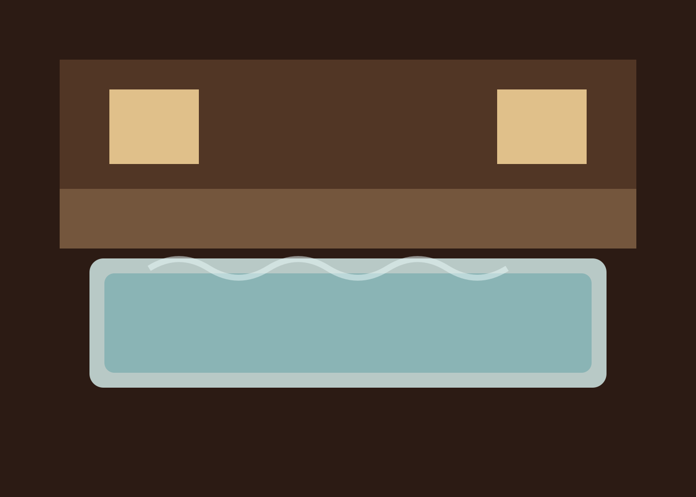
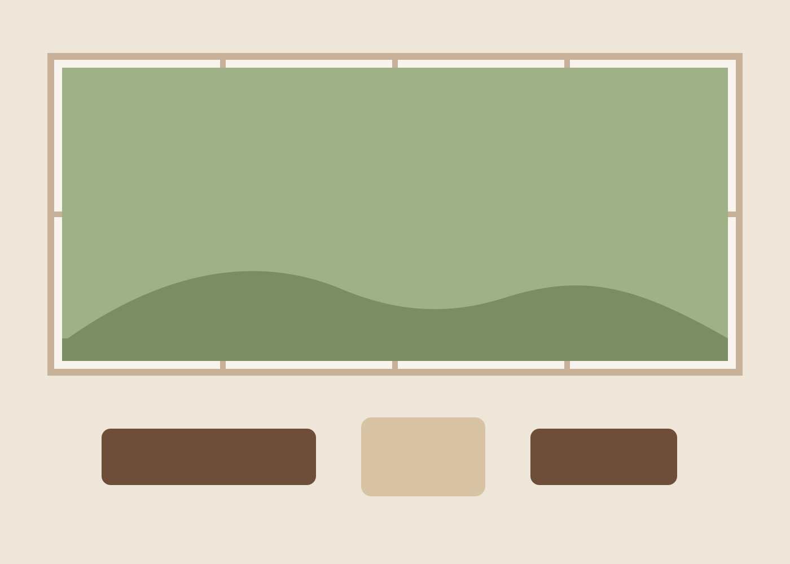

大浴場
男女別の内湯と露天風呂をご用意しています。泉質は単純温泉で、肌あたりが穏やかです。
Onsen & Access
湯のぬくもりと、館内の静かな居場所。初めてお越しの方にも安心していただけるよう、滞在前の情報をまとめています。

温泉
男女別の内湯と露天風呂をご用意しています。泉質は単純温泉で、肌あたりが穏やかです。
45分単位の予約制。小さな庭を望む半露天の湯で、ご家族やご夫婦で静かにお過ごしいただけます。
冷茶、麦茶、地元の牛乳をご用意。庭に面した長椅子で火照りを冷ましながらお休みください。

館内施設
アクセス・予約情報
〒509-4301 岐阜県飛騨市山里町16-8
JR飛騨古川駅より送迎車で約15分。送迎は前日20時までの予約制です。
高山西ICより約40分。無料駐車場12台分をご用意しています。冬季はスタッドレスタイヤでお越しください。
公式予約、お電話、メールにて承ります。貸切風呂、送迎、食事相談は予約時にお知らせください。
よくあるご質問
現在はご宿泊のお客様のみのご利用としています。貸切風呂も宿泊者限定です。
全館で無料Wi-Fiをご利用いただけます。談話処と客室で安定して接続可能です。
平日を中心に「山吹」にて承っています。繁忙日は二名様以上でのご案内となる場合があります。